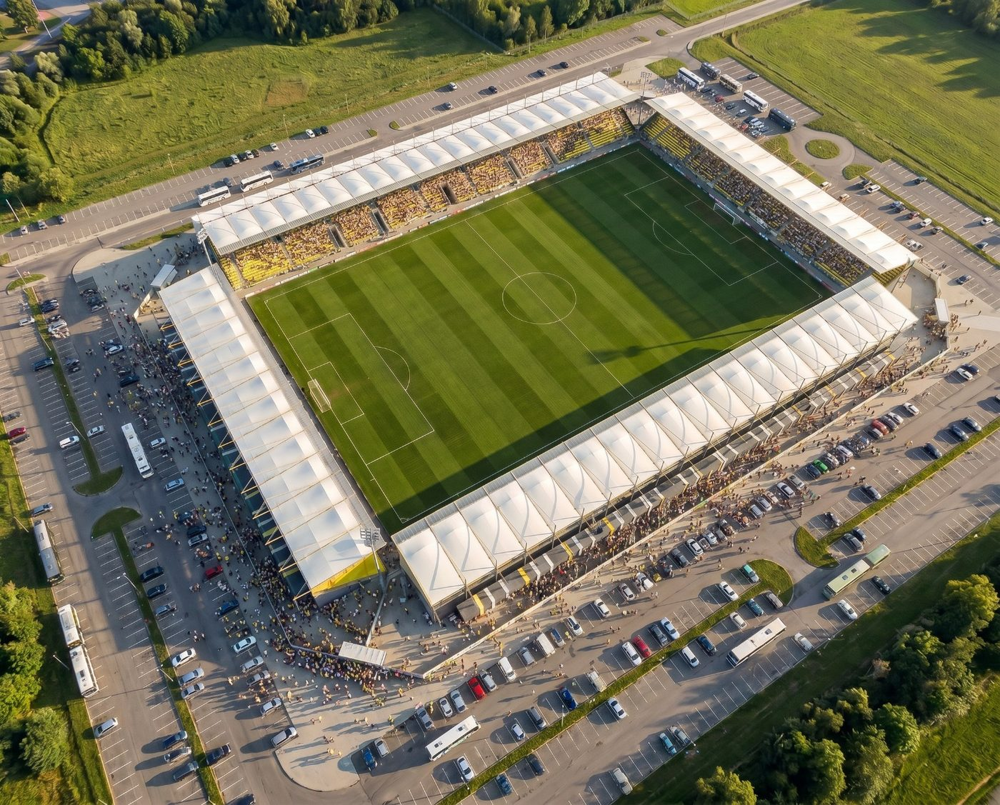

Łączymy brytyjską technologię modułową z polskim wykonawstwem, aby dostarczać trybuny i areny klasy UEFA/FIFA szybciej, lżej i z mniejszym śladem węglowym.

Innovate Stadia Systems Poland to coś więcej niż oddział korporacyjny — to dynamiczny podmiot łączący brytyjskie know-how techniczne z dogłębną znajomością środkowoeuropejskiego rynku.
Z materiału „Synergy Transforming European Arenas”, 2026Za tym partnerstwem stoją Dyrektorzy Gregory Borowiec i Maciej Gabor, którzy dostrzegli lukę między dostępnością przełomowych globalnych technologii a ich praktycznym wdrożeniem na lokalnych rynkach — i zbudowali spółkę, która tę lukę wypełnia.
Poznaj historię firmyOd pierwszego szkicu konstrukcyjnego po ostatni panel elewacji — nadzorujemy cały proces dostarczania nowoczesnej infrastruktury sportowej.
Systemy zastępujące tradycyjny beton — lżejsze, odporne na korozję i szybsze w montażu.
Zobacz technologię →Wybrane koncepcje i propozycje projektowe przygotowane w oparciu o BIM i prefabrykację.
Przeglądaj projekty →Innovate Stadia, Tilea Systems, AWL i GB Consultancy Group — wspólne doświadczenie na rynkach międzynarodowych.
Poznaj partnerów →Nasz zespół w Warszawie odpowiada na zapytania dotyczące budowy, modernizacji i finansowania obiektów sportowych na terenie całej Polski.